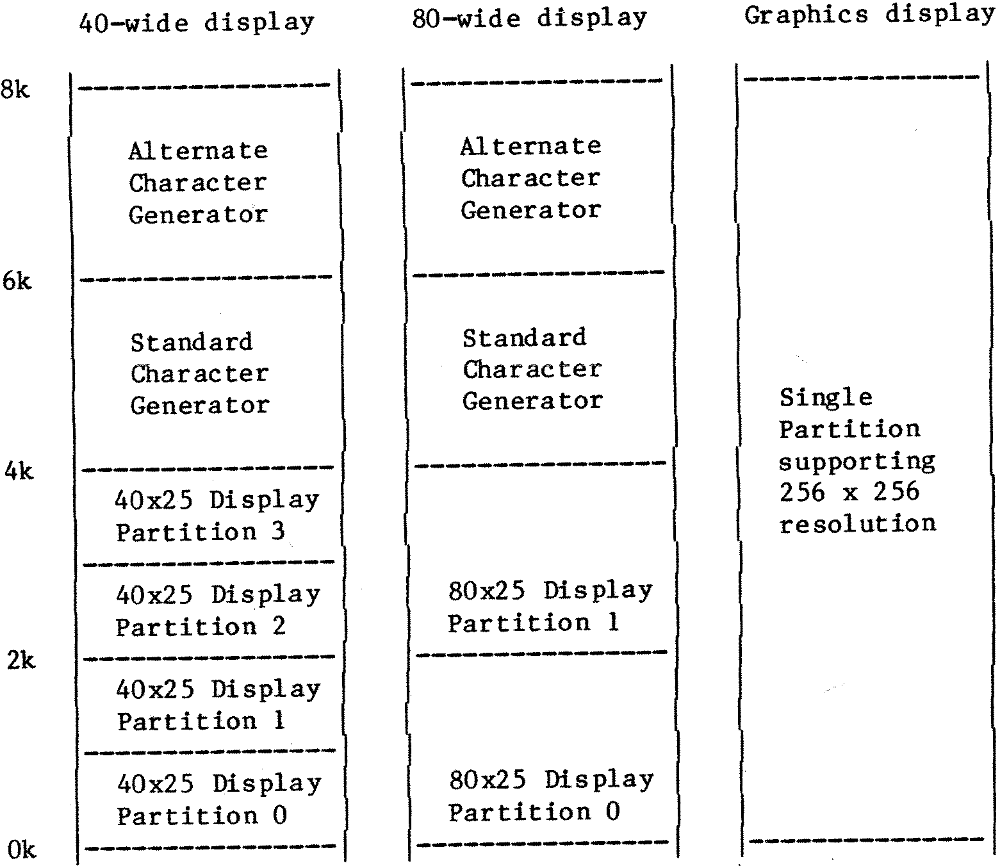

80-Bus News |
May–June 1984 · Volume 3 · Issue 3 |
| Page 16 of 51 |
|---|
To continue from where we left off … The SVC is a close relative of the IVC that is upwards compatible with it, but offers extended features and greater power. The extra features that have arrived with the SVC are summarised in table 1.
I’ll start by taking various of the hardware changes that have been made and indicating the software benefits that have been gained.
The IVC had a 2k x 8 static RAM for the screen memory, a 2k x 8 EPROM for the main character generator, and a 2k x 8 static RAM for the alternate character generator. With the SVC design these have been combined into a single 8k x 8 static RAM. The 8k of RAM is partitioned in various ways depending upon the selected display mode (see Figure 1). When in alpha mode the RAM is actually accessed twice per character. The first time is to pick up the character from somewhere in the lower 4k, and the second time to look-up the appropriate row of dots for that character from the upper 4k.
With the SVC the character set is now totally programmable. The initial character set is held within the monitor EPROM, and is copied out into the top half of the screen RAM on power-up, or whenever alpha-mode is reselected following a graphics display. The SVC-MON also holds various foreign character
| Page 16 of 51 |
|---|